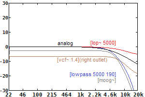
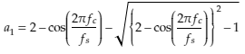
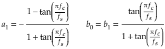
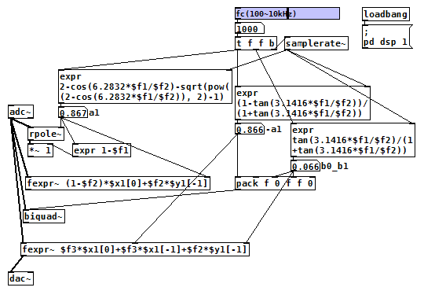
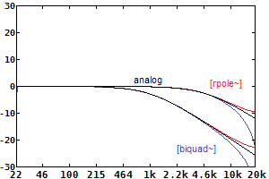

1次ローパスフィルター（Pure Data パッチ）
2017年09月20日 カテゴリー：Pure Data
Pure Data(Pd)で使える各ローパスフィルター(LPF)の特性を示します。カットオフ周波数（fc）は5000Hz、サンプリング周波数（fs）は44100Hzです。

fcが高い場合にアナログ1次LPFに近く使いやすそうなオブジェクトがないので、[rpole~]や[biquad~]を使ってみることにします。私には詳しく説明できる程の知識がないので、とりあえず計算式だけを紹介します。
＜[rpole~]用＞
こちらのサイトの式が一番精度が高いようです。aとbを逆にしています。

[rpole~]の右インレットに上記a1の値を入れます。そのままでは音量が上がるので、出力に b0=1-a1 をかけるとよいようです。
＜[biquad~]用＞
このアプリケーションノート(pdf)の式を使いました。

[biquad~]へ[-a1 0 b0 b1 0]の形で送ります。
[rpole~][biquad~]と同じ意味となる[fexpr~]も加えてパッチを作りました。適宜出力を繋ぎ替えて下さい。

（このパッチをダウンロード）
下図はfc=1000とfc=5000、fs=44100での特性です。高域部分が[rpole~]では上がり気味に、[biquad~]では下がり気味になるようです。

面倒な数式ですが結構苦労したので、いつの日かこのLPFを使うときが来ればいいなぁと思います。
---以下2017年9月23日追記---
[lop~]の手軽さは捨てがたいので、変換表を作りました。上段のカットオフ周波数に設定したいときは、下段の値を[lop~]に入れればOKです。※fs=44100での値です。
| fc(Hz) | 1000 | 1500 | 2000 | 2500 | 3000 | 4000 | 5000 | 6000 | 8000 | 10000 |
| [lop~] | 931 | 1346 | 1730 | 2085 | 2412 | 2990 | 3477 | 3887 | 4520 | 4964 |